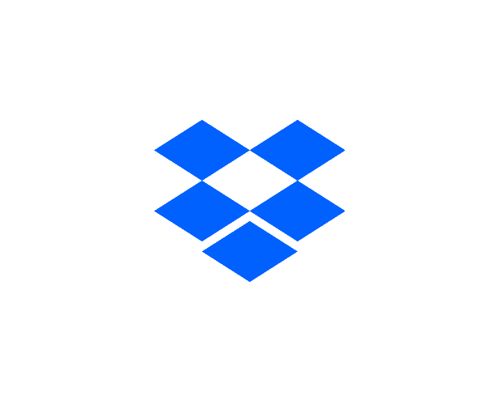

Order by
,
{{criteria.text}}
< no order >
▼
▲
{{sorting.orderBy.indexOf(criteria) + 1}}
↧
↥
folder
{{file.dat.name}}


autorenew
Loading files....
autorenew
Searching....
error_outline
Couldn't load your files
If this error persits, try reconnecting your sources to your account.
For more help contact support.
inbox